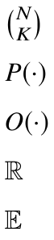

- a
- Scalar (variable)
- A
- Scalar (constant)
- A.
- Set
- a.
- Vector
- ai.
- The i-th element of vector a.
- [a1, a2, . . . , aN ].
- Sequence
- A.
- Matrix
- ai.
- The i-th row of matrix A.
- A
- Transpose of matrix A.
- A-1.
- Inverse of matrix A.
- diag(a).
- Convert vector a. to a diagonal matrix
- 2.
- 2-norm of a vector or matrix
- .
- Element-wise multiplication (Hadamard product)
- ⊕.
- Concatenation of vectors or matrices
- ⊗.
- Batch matrix multiplication
- ∗.
- Convolution
- ∇.
- Gradient
- .
- Number of combinations of K elements from N distinct elements
- P(·).
- Probability distribution
- O(·).
- Asymptotic upper bound symbol
- R.
- Set of real numbers
- E.
- Expectation
List of Symbols
.
